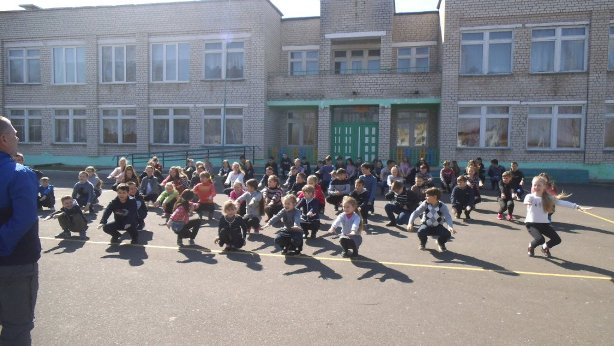
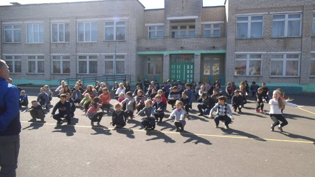

В 1997 году построено современное, двухэтажное здание школы, в котором обучалось 105 учащихся, в стенах которого и располагается государственное учреждение образования «Шарейковская средняя школа Костюковичского района» в настоящее время.
В 2009 году Шарейковская средняя школа преобразована в государственное учреждение образования «Шарейковская средняя общеобразовательная школа».
В 2012 году государственное учреждение образования «Шарейковская средняя общеобразовательная школа» переименовано в государственное учреждение образования «Шарейковская средняя школа Костюковичского района».
В 2017 году государственное учреждение образования «Шарейковская средняя школа Костюковичского района» реорганизовано в государственное учреждение образования «Шарейковский учебно-педагогический комплекс ясли-сад- средняя школа Костюковичского района».
В 2022 году государственное учреждение образования «Шарейковский учебно-педагогический комплекс ясли-сад- средняя школа Костюковичского района» переименовано в государственное учреждение образования «Шарейковская средняя школа Костюковичского района».
1997 – 2008 директор Попков Валерий Егорович.
2008 – 2009 директор Справников Владимир Васильевич.
2009 – 2012 директор Федосенко Леонид Иванович.
2012 – 2015 директор Ляховец Василий Владимирович.
2015 – 2017 директор Шунькина Грета Павловна.
2017 – настоящее время директор Муращенко Людмила Леонидовна.
Многие ученики нашей школы связали жизнь с педагогической профессией и вернулись работать в родную школу.
Муращенко Людмила Леонидовна, директор.
Туманкова Тамара Анатольевна, заместитель директора.
Годунова Надежда Леонидовна, педагог-организатор.
Ладощенко Жанна Ивановна, учитель белорусского языка и литературы.
Мешкова Лилия Николаевна, педагог-психолог.
Солтанова Лина Васильевна, учитель начальных классов.

 

Директор Людмила Леонидовна
Заместитель директора Туманкова Тамара Анатольевна
Годунова Надежда Леонидовна, учитель истории и обществознания
МЕШКОВА Лилия Николаевна, педагог-психолог, І квалификационная категория, окончила Негосударственное образовательное учреждение высшего профессионального образования «Московский психолого-социальный институт»
Учитель химии и биологии
Капашинова Ирина Васильевна, учитель биологии и химии, I квалификационная категория.
Окончила Белорусский государственный университет, биологический факультет, 2008г.
Стаж работы с 2008г. -12 лет.